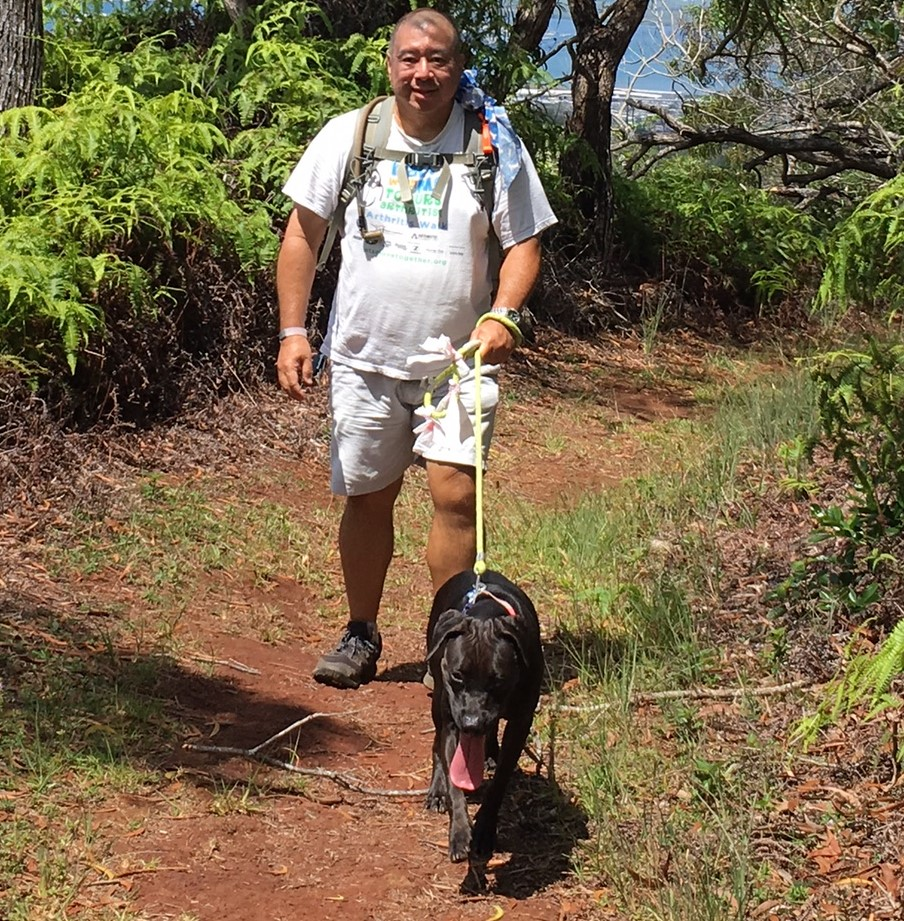
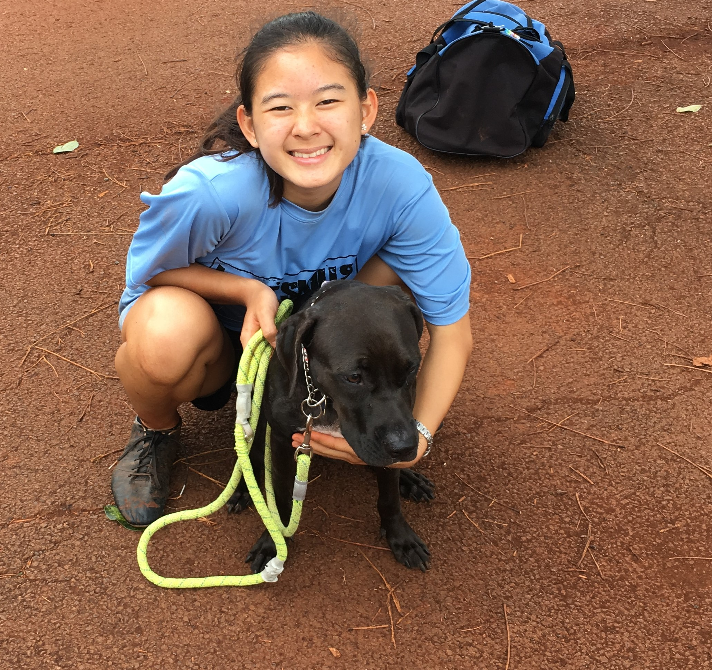

Hiking with Dogs
Safe Hiking with Your Dog (in Hawaii)
Being in nature is important to the physical and spiritual health of people and dogs. We are fortunate that Hawaii offers a plethora of accessible trails ranging in fauna, steepness, and terrain (valley, ridge, or shoreline). Going for a hike or run creates a tired, happy, and better-behaved dog. He enjoys the challenge of rocks, branches, and streams. Trails are natural agility courses!
Always research the trail and look at videos for shade and difficulty. The Hikers Guide to O’ahu updated and expanded edition by Stuart M. Ball, Jr. (2013) is an excellent resource containing trail directions, descriptions, and topographic maps. The amount of water you and your dog carry should determine the length of your hike. Turn around BEFORE half of the water is gone and hydrate the dog at least every 30 minutes. Ball recommends at least one liter of water per person for short, easy hikes (Ball, 2013, p. xviii), so bring extra on top of that for your dog.
Keep a watchful eye on the dog’s behavior and comfort. Cesar Milan writes “If their tongue is hanging out of their mouth more than halfway, it’s a sign to stop and take a rest…If they start picking up their paws too quickly, it may be a sign that the ground is too hot, so find some shade to cool off.” (Cesar Milan's Hiking with Your Dog)
Other important safety considerations for hiking with your dog:
- Keep the dog on a leash as curious dogs that run off can get lost or attacked by hunting dogs.
- If you see a hunter’s truck near the trailhead (usually has a cage over the truck bed) maybe choose another trail or day to hike. The mountains aren’t going anywhere. Most hunters have tight control over their dogs, which are required to be leashed unless in active pursuit of prey. However, hunting dogs are behaving as pack animals in nature and your pet dog may just be at the wrong place at the wrong time. Use caution. Be safe.
- Hike by TIME NOT DISTANCE. Start with 30-45 minutes in then turn around and go back. Do not push on if you or the dog is new to hiking or the trail.
- Be aware of sunset and give yourself plenty of time. Valley and ridge hikes get darker sooner than the official sunset time.
- Be calm. If you are nervous or unsure your dog will feel it and may become aggressive to other hikers and dogs to protect you.
Good, shady trails for dogs and people:
- Waimano Stream trail
- Manana Falls trail
- Aiea Loop trail
- Tantalus trails starting from Hawaii Nature Center or Pu’u ‘Ualaka’a Park
- Kuli’ou’ou Ridge trail
- Maunawilili trail
There are others. These are just the trails I am most familiar with. Most importantly, take it easy, bring lots of water, have fun. Several short and enjoyable hikes are better than one long, disastrous one. You and your dog deserve the gift of trails Hawaii offers.
Playing with other Dogs

Friends stuff
Walks with Dogs
Walk stuff